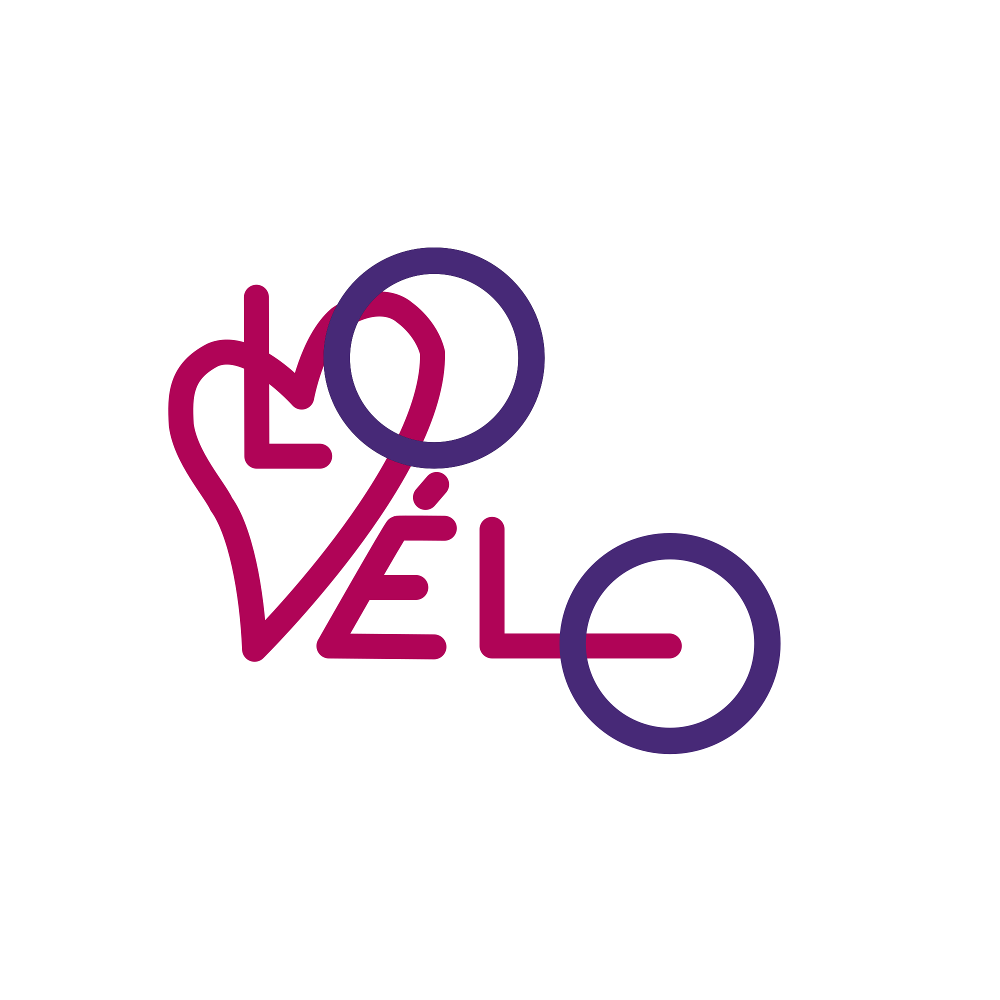

Découvrez l'architecture, l'histoire et les secrets de la métropole rouennaise grâce aux Lovélo — le vélo en libre-service de Rouen.
Un projet citoyen né de l'envie de rendre Rouen plus accessible, plus verte et plus vivante grâce au vélo.
Des tracés qui mettent en valeur l'architecture gothique, les bords de Seine et les quartiers méconnus de Rouen.
En partenariat avec les Lovélo, nous encourageons un transport urbain accessible à tous, sans voiture.
Chaque balade est une action concrète pour réduire les émissions et adopter un mode de vie plus durable.
Des sorties collectives pour rencontrer de nouvelles personnes et créer du lien autour du vélo.
"Inspirés des Lovélo de Rouen, nous avons voulu créer un outil qui encourage les habitants et visiteurs à explorer la ville à vélo, tout en découvrant son architecture, son histoire et ses secrets."— L'équipe Loveloveur, cycle ingénieur
Trois balades conçues pour tous les niveaux, à parcourir seul ou en groupe avec un Lovélo.
Un tour du Vieux-Rouen entre la Place du Vieux-Marché, la Cathédrale Notre-Dame et l'Église Saint-Maclou.
Longe la Seine depuis le Port de Rouen jusqu'aux hauteurs de Bonsecours avec une vue panoramique.
Un défi pour les amateurs : grimpez vers Canteleu et Bellevue pour une vue à 360° sur la vallée de la Seine.
🗺️ D'autres tracés arrivent prochainement avec l'application
Planifiez vos balades, suivez vos tracés en temps réel et rejoignez des groupes de cyclistes directement depuis votre téléphone.
🔔 Application en cours de développement — revenez bientôt !
Des étudiants en cycle ingénieur, portés par la conviction que la mobilité douce peut transformer nos villes.
Votre retour nous aide à construire un projet qui correspond aux besoins des habitants de Rouen.
Votre avis nous aide à améliorer le projet Lovélo Rouen.